Workflow as Knowledge: Semantic Persistence for LLM-Mediated Workflows
这篇论文讨论的不是如何让 LLM Agent 再多会一种工具，而是如何改变我们对“工作流是什么”的建模方式。作者 Emanuele Quinto 的主机构是 UNHCR，合作作者来自 CNR-Istituto Nanoscienze 与 ZeLe & F ApS。论文于 2026 年 7 月 9 日提交到 arXiv，唯一论文入口为 arXiv:2607.08740。作者明确把它定位为语言无关、受 Lisp 启发的概念模型；本轮未核验到独立实现、项目页或代码仓库。
显式工作流虽然已经能组织工具调用、检索、分支、checkpoint 和人工批准，但工作流定义、运行实例以及模型判断与人工决策仍常散落在源码、配置、运行时状态、日志、trace 或聊天历史中；基础设施能够关联这些工件，并不等于它们在共享语义对象模型中拥有稳定身份、明确角色和可查询关系。
1. 背景和问题
1.1 从隐式提示链到显式工作流，问题只解决了一半
LLM 应用已经从单轮提示转向带状态的工作流：工具调用需要权限，检索需要来源范围，长任务需要 checkpoint，模型输出之后可能有 schema 校验、人工批准、重试、分支和回滚。LangGraph、DSPy、Flows/aiFlows、AgentSPEX 一类系统让控制流、模块、状态和恢复点显式化，这是论文承认的真实进步。与“让模型自己一路反应”的方式相比，显式图或 DSL 至少让执行者知道下一步是什么、在哪里暂停、怎样恢复，也能保留日志和输出供排障。
但作者追问的是另一层问题：六个月后，能否把某次模型判断作为一个有类型、有上下文、有依赖的知识对象查询出来？某个决策依赖了哪份文档、哪次检索、哪段当时可见的上下文？一次 panel 讨论是普通 UI 事件，还是包含 motion、options、arguments、decision 和 context 的持久对象？如果旧判断被复审，新旧记录之间能否用 supersession 或 dispute 关系连接，并让依赖它的派生对象重新计算？这类查询不是“有没有 log”就自动得到答案，因为 log 记录了发生过什么，却未必声明每个工件在领域语义中的角色。
论文把这种碎片化描述得很具体：定义可能在源码或配置，运行中的一次 occurrence 由 runtime 管理，中间结果留在数据库行、trace、聊天或文件里。它们可以靠 ID 被关联，却仍属于不同表示层。作者因此提出，工作流不应只是一段会运行的控制结构；它的定义、实例、推理记录、上下文快照、批准记录与依赖关系，都应像文档、决策、事实一样进入同一个 knowledge substrate。这里的目标不是“保存更多”，而是让真正 consequential 的材料具有 identity、type、relation 和 queryability。
1.2 执行持久化不等于语义持久化
论文最重要的边界是 execution persistence 与 semantic persistence。前者保存 configuration/code、正在运行的 state、checkpoint、log、trace 和 output，主要回答“任务能不能继续跑、故障能不能恢复、执行发生了什么”。后者把 workflow-definition、workflow-instance、inference-record、context-snapshot 等作为一等知识对象，主要回答“这个判断是什么类型、看过什么、由谁或什么机制产生、影响了哪条分支、后来是否被替代”。两者不是非此即彼：一个可用系统通常需要前者，论文希望在其上增加后者。
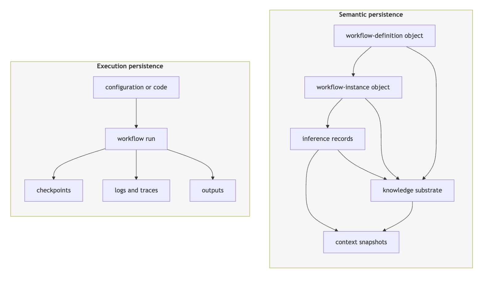
Figure 2 左侧的最小单位仍是一次 workflow run；checkpoint、log/trace 和 output 都从运行向外展开，因此重点是把执行现场保存下来。右侧则从 workflow-definition object 到 workflow-instance object，再连接 inference records、knowledge substrate 与 context snapshots。尤其值得注意的是，context snapshot 不只是一次 prompt 文本备份，它与 inference record 和 substrate 都有关系；定义与实例也不是执行完即消失的配置，而是可继续被查询的对象。图中并没有声称左侧无用，反而说明论文的新增部分发生在“被保存对象的语义地位”上。若一个现有引擎已经能把 checkpoint、trace 和业务记录映射成可查询实体，它可能实现部分相同目标；论文的差异是要求这些角色在 DSL/object model 中预先声明，而不是事后从日志猜测。
这个区分对 RAG、Agent 和推荐系统都很实际。RAG 链路里，检索结果、过滤规则、模型答案与人工纠错常被分别记录；推荐系统训练或上线流程里，数据版本、特征构建、模型评审、灰度批准和回滚原因也常分布在不同系统。semantic persistence 的设想，是让一次模型介导判断所见的候选、策略、上下文与后续影响形成显式对象图。不过论文谨慎地指出：可查询不等于可信，保存上下文不等于归因正确，记录完整也不等于审计质量高。持久化只是后续审查的条件，不是审查结论本身。
1.3 Lisp 只是解释透镜，知识基底也不是特定数据库
标题中的 Lisp 容易让人误以为作者要推广 Common Lisp 实现。实际上，论文借用的是 symbolic forms、object identity、live image、reflective inspection 与 extensible object protocol 的直觉：书写形式尽量贴近它所表示的对象，定义和运行状态能在同一环境里被检查，系统不必把程序、数据和工具完全割裂。作者反复强调这是 explanatory lens，不是 implementation commitment；一个实现可以用 CLOS，也可以用图数据库、RDF、event log、关系库或对象存储。
因此，论文真正的研究问题可以更准确地写成：能否把 workflow definition、running instance 及其产生的 inference/approval/panel records 建模为共享基底中的 typed persistent objects，同时让 deterministic computation 与 LLM-mediated judgment 接受不同的语义标准？ 这是一项对象模型和词汇设计，而不是经过 benchmark 验证的新运行时。阅读时必须始终保留这个证据级别，否则很容易把“可检查、可恢复、可复审”从设计目标误写成已证明的系统效果。
2. 方法
2.1 核心语义模式：把定义、实例与记录放进同一知识基底
论文先把整体架构分成三层。最高的 semantic layer 保存 workflow-definition、workflow-instance，以及 inference、approval、panel 等 records；中间的 control layer 是 DSL machine，包含 grammar、object constructors、validator、policy、executor 与 knowledge-substrate interface；最低的 runtime service layer 提供 model adapter、tool/external process、persistence/index service。模型不是工作流的控制器，数据库也不是语义模型本身；把声明对象解释成运行、检查策略并写回记录的是中间层 executor。
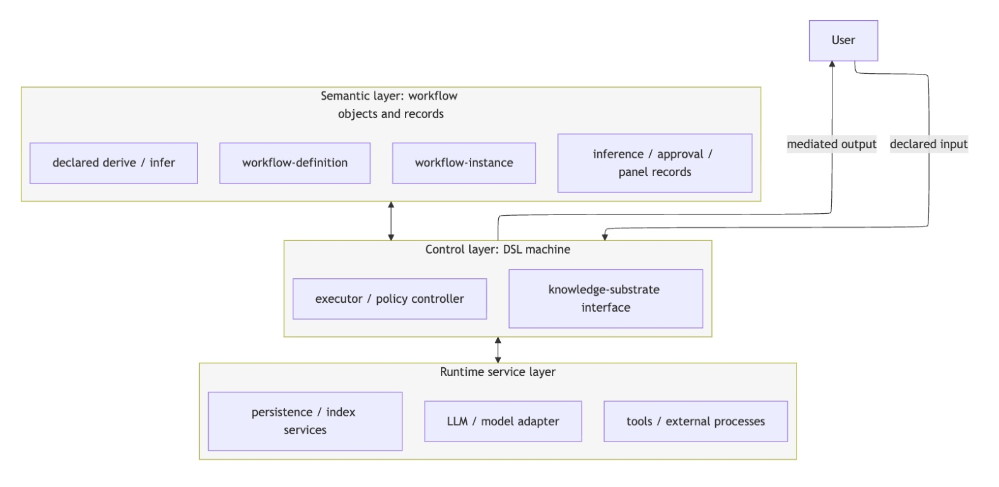
Figure 1 把数据与权力边界画得很清楚。用户的 declared input 进入 control layer，模型或工具的 mediated output 也先回到这一层；semantic layer 中的 workflow-definition 和 workflow-instance 被 DSL machine 读取，而 inference/approval/panel records 等新对象又由它写回。runtime layer 只提供能力，不决定对象在领域中的含义。双向箭头意味着知识基底并非冷归档：定义和已有实例可以参与新的执行，执行又产生可查询对象。对于 Agent 系统，这个分层可避免把“模型提出 tool call”误写成“模型执行了动作”；对于推荐流水线，也可避免把模型评审意见、人工上线批准和真正的部署操作混成同一种 event。
Table 1 给出对象本体。workflow-definition 是可复用的 declared process，workflow-instance 是一次运行或恢复的 occurrence。输入和上下文侧包含 input-binding、resource-binding、context-snapshot、retrieval-record；计算侧把 deterministic derived-object 与 mediated inference-record 分开，还包括 permitted tool 返回的 tool-result-record；人和策略侧包含 decision-record、approval-record、panel-record。前两页合起来才是完整表，不能把跨页末行当成可忽略附录。
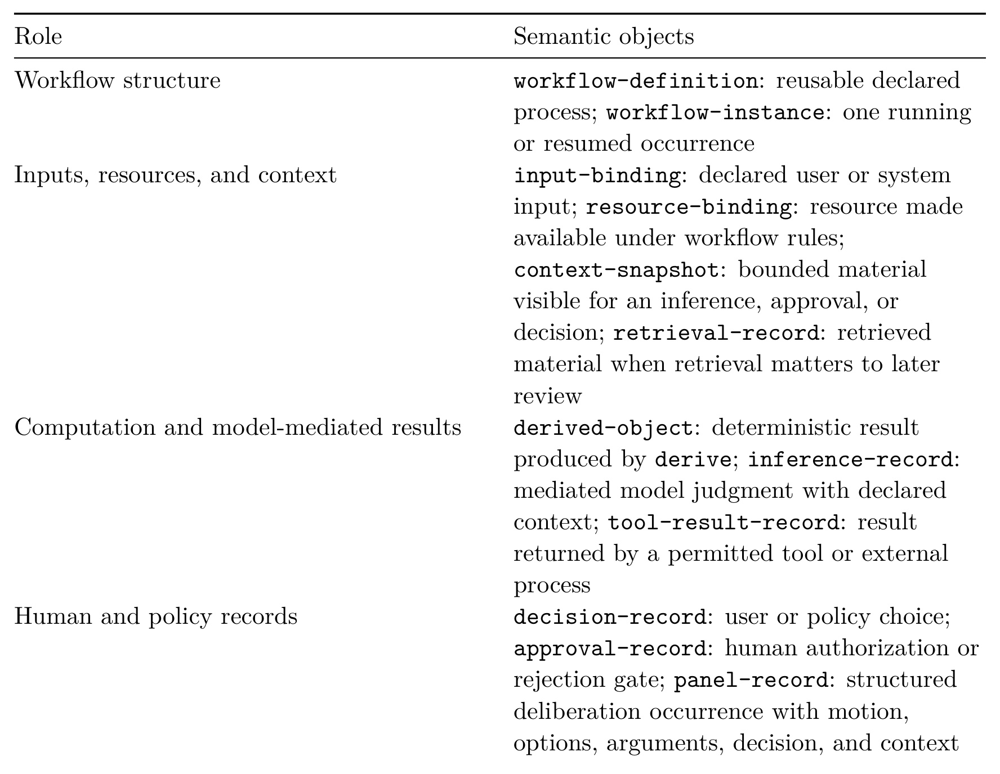
Table 1 上半部分的组织方式比单纯列名更重要。它先按 role 分组，再定义 semantic objects，说明 object type 不是存储格式，而是工作流中的职责。context-snapshot 表示某次 infer、approval 或 decision 真正可见的 bounded material；retrieval-record 只在检索材料影响后续复审时需要突出。derived-object 代表可重复的确定性结果，inference-record 则保留模型判断与声明上下文，tool-result-record 记录被允许的外部过程返回值。decision、approval 和 panel 也不应合并：普通选择、授权闸门和结构化讨论具有不同权力与证据结构。这个细分让后续依赖关系可以表达“结论依赖模型判断，但状态转移由人工批准并由 executor 应用”，而不是只留一条含混的成功日志。
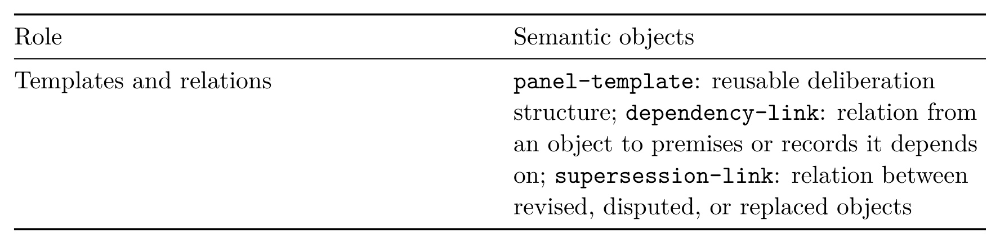
续表补上 templates and relations。panel-template 是可复用的讨论结构，dependency-link 把对象连接到它所依赖的 premise 或 record，supersession-link 则连接 revised、disputed 或 replaced objects。它们决定了持久化是否只是静态堆积：如果没有 dependency，后来审查者只看到很多记录，不知道影响路径；如果没有 supersession，纠错只能覆盖旧值或让多个版本并存而缺少语义。论文没有给出完整生命周期规则，但已经把“旧判断被替换后怎样保留历史”设为对象模型的一部分。
对象本体之后，Table 2 转向 operating vocabulary，即工作流作者能声明或调用什么。resource、guard、context、state、record、approval、panel、derive、infer 是当前核心；capability/action 与 handoff/promotion 被标为候选 refinement。state 是运行中使用的 active memory，record 才是越过执行边界的 durable evidence；approval 表示是否允许某个转移，panel 表示结构化 deliberation，二者都不直接等价于 branch。
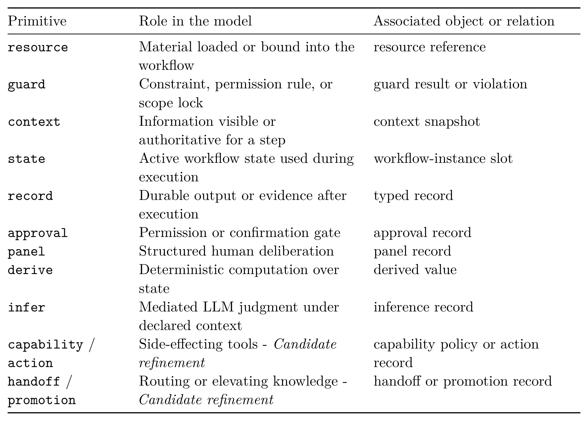
Table 2 的第三列把 primitive 与 object/relation 对齐：context 产生 context snapshot，infer 产生 inference record，approval 产生 approval record，panel 产生 panel record；guard 可能产生 result 或 violation，capability/action 对应 policy 或 action record，handoff/promotion 对应跨工作流关系。这个映射说明语义持久化不是把所有 runtime mechanism 都对象化。RAG、MCP connector、tool API 和数据库本身不是 semantic objects；只有它们的输入、输出、检索上下文、决策或 effect 被赋予 typed role 时，才进入模型。这样可以限制对象爆炸，也把“基础设施存在”与“业务语义被记录”分开。
2.2 derive、infer 与 context：把确定性计算和模型判断分开
核心原语对是 derive 与 infer。derive 对已经可用的 workflow state 做确定性计算，语义上应可测试、可重放；如果涉及随机算法，作者允许在 seed、输入、算法版本和 replay policy 都显式时仍视为 derive。infer 则请求 LLM 在声明上下文和 executor policy 下做判断，需要 intent/prompt、预期返回类型、validation、持久化结果以及外部能力策略。模型原始输出是 candidate，只有通过 executor 验证才成为可绑定的值或 inference-record。
二者并非按“有没有模型 API”机械划分。同一个“找下一条未解决问题”的任务，如果 open questions 已被显式建模，可以 derive；如果需要判断什么问题在实质上仍未解决，就应 infer。作者希望 DSL 强迫工作流设计者暴露选择，而不是把判断藏进一个名字像普通函数的节点里。这条边界本身不是安全证明，也不总是数学上唯一；它的价值首先是让作者的选择、模型依赖与后续影响可检查。
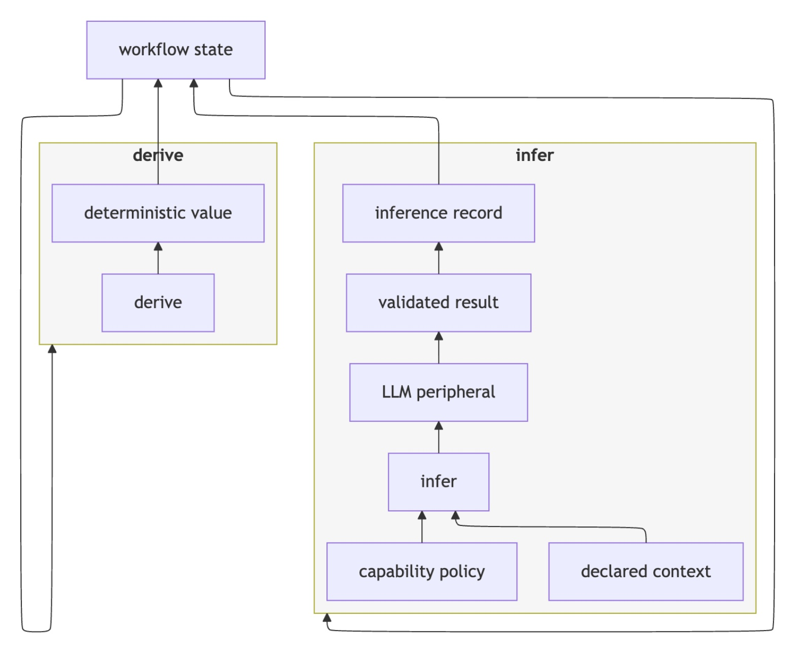
Figure 3 左侧的 derive 从 workflow state 得到 deterministic value，再回写 state；右侧 infer 同时受到 declared context 和 capability policy 约束，先经过 LLM peripheral，再形成 validated result 与 inference record。最外层回边说明 infer 的值可以影响 workflow state 和声明分支，但图中没有从 LLM 直达外部 action 的捷径。若一个 derived-object 依赖此前的 inference-record，依赖必须保留，而不能因为后来做了确定性归一化就把判断性前提“洗掉”。这对推荐系统尤其重要：例如模型先从内容中推断标签，后续规则再把标签映射成特征，最终特征仍应追溯到那次模型判断，而不是被标成纯确定性产物。
context 也不是静态 prompt template。context scope 声明某个 operation 能看到哪些 workflow state、static resources 和 executor-retrieved material；context snapshot 保存实际组装出的 bounded view，供以后复审。若来源版本、检索结果或 freshness 改变，同一个 infer site 可能不再兼容旧记录。论文因此把 context、version 与 freshness 视为复用策略的组成部分。这里的工程难点是隐私和体积：保存“模型当时看到了什么”能改善回溯，却也可能长期保留敏感输入、过期资料和错误内容，必须配合生命周期与访问控制。本文没有可复用的核心公式：PDF 没有编号方程、训练目标、损失函数或概率模型；附录 A 使用 D、I、S、K、C、CS、P、e、q、raw、v、r、R 标记语义位置，附录 B 使用 pseudo-Lisp 展示对象和控制构造。这些记号帮助说明输入、输出和可能的 state/substrate effect，但作者明确说 formal transition semantics 仍属未来工作，所以不能把自然语言 effect sketch 当成已经证明的 calculus。
2.3 Executor、语义 checkpoint 与受限恢复
Executor 是 DSL machine 的 controller。它读取 workflow-definition，创建或恢复 workflow-instance，检查 guards 和 capability policies，求值 derive，介导 infer，应用 declared transitions，并通过 knowledge-substrate interface 持久化 meaningful records。用户或 executor 可以提供输入，模型只接收被声明和组装的上下文；模型返回的是 candidate value 或 action proposal，type validation 与 policy check 之后才可能形成记录、影响分支或触发 permitted external effect。
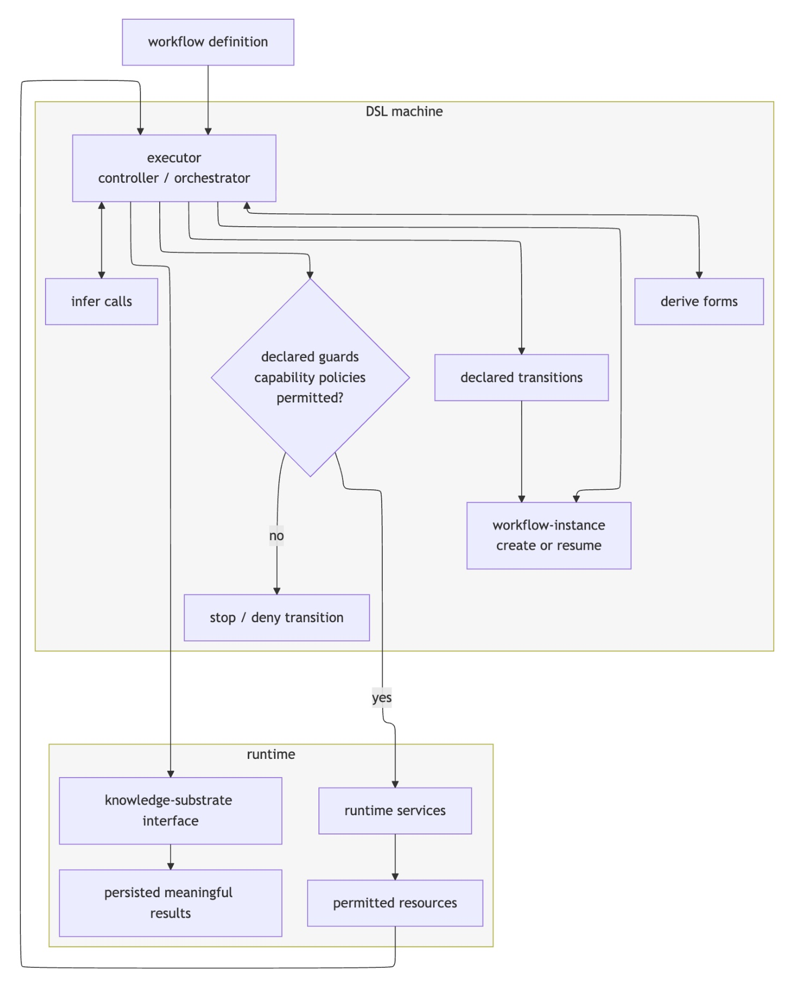
Figure 4 的中心不是 LLM，而是 executor/controller/orchestrator。workflow definition 进入 executor；derive forms、infer calls、declared transitions 和 guards/capability policies 都由它解释。guard 失败走向 stop/deny transition，通过后才访问 runtime services 或 permitted resources。workflow-instance 的 create/resume 与 knowledge-substrate interface 分列两侧，说明 active execution state 和 durable semantic objects 是相关但不同的东西。最外层长回路把 persisted meaningful results 带回 executor，表示历史记录可以参与恢复与复审，却仍需再次经过控制层。图中这种 mediation 对工具安全很关键：即使 infer 输出了合法 action schema，也不能绕开 capability policy。
所谓 semantic checkpoint，比普通进程快照更窄也更语义化。workflow-instance 保留 live session state、指向 definition，并链接读过或产生的知识对象；中断后实例仍在 substrate 中。到达某一步时，executor 可以查询同一 instance、step 和 subject 下是否存在兼容记录。例如已有 panel-record 保存了 choice，且满足 workflow 的 compatibility policy，就可以不重复呈现讨论。但作者没有说“有记录就复用”：context、版本、freshness、对象是否被 dispute/supersede，都应影响兼容性。旧 inference 可缓存不等于旧 inference 为真。
控制流也被刻意限制。作者主张目标工作流主要使用 continue、repeat、stop、accept、reject、defer 等局部结构，复杂路由通过组合较小 workflow 完成，而不是引入一般 goto。原因不是表达能力不足，而是任意跳转会损害对象图的可检查性，并让 DSL 变成隐藏的第二门通用语言。这个选择能否覆盖真实生产编排尚未验证，但它让“工作流作为数据”的边界更清晰。
2.4 有限语义素描与 ARS 风格 claim-review 实例
附录 A 把 primitive effect 放到统一语境中：S 是 instance 的 active workflow state，K 是 persistent knowledge substrate，C/CS 分别是 context scope 与实际 snapshot，P 是 executor-side policy。resource 解析受允许材料，context 组装可见内容，guard 决定是否允许 transition，derive 产生 deterministic value，infer 产生 validated value 或 rejection，approval/panel 获取人的授权或讨论结果，record 把 consequential output 变成 durable object。state 的变化不自动是证据，只有被 record 或 snapshot 提升后才进入 K。
这个 sketch 的优点是逐项说清 primitive 可能读写 active state、knowledge state 或二者；缺点是“may persist”“may bind”仍有大量未定空间。没有正式规则说明失败时原子性、并发 instance 冲突、record 重复、事务回滚、跨 workflow handoff、删除后的 provenance 保留等问题。capability/action 与 handoff/promotion 也只是候选 refinement。因此，当前贡献是一个可讨论、可实现的对象与权力词汇，不是可直接执行的完整规范。
附录 B 进一步用 ARS 风格 claim-review 做 worked example：输入一条 draft claim；resource 声明 manuscript section、checked source notes、citation anchors、feedback records 和可选 material passport；context 组装 bounded review material；两个 derive 分别检查 claim shape 和 source availability；条件满足后 infer 生成 claim-risk candidate；author approval 可以 accept、revise、defer 或 escalate-to-panel；panel 形成结构化 deliberation record，最终由 executor 按声明分支写出 accepted/revision/research/source-work-needed 等记录。这个实例将在第三章作为概念一致性材料继续检查，而不是作为实现结果。
3. 实验结果
3.1 证据级别：未提供实证评估
本文未提供实证评估。 没有可运行 prototype、数据集、任务成功率、用户研究、审计质量指标、恢复正确率、存储开销、索引时延、基线实现、随机种子或统计显著性。作者在引言、讨论和未来工作中都明确说 implementation and empirical evaluation 留待后续；四项 claims 是 design commitments，不是 tested claims。因此，本章不能按常规论文写“主结果、消融和效率”，而应审查作者实际给出的四类材料：77 项探索性 vocabulary scan、approach-family 比较表、ARS 风格概念实例、初步 PROV-DM 映射，以及这些材料尚未覆盖的可验证命题。
最接近数据的部分是 Section 4 与 Appendix D 的 77 个 selected、qualitative、heterogeneous skill-like artifacts。三组分别是 local/internal design material 17 项、Codex/Claude-style public agent artifacts 30 项、Workflow/OpenClaw operational artifacts 30 项。原 0-3 checklist 中得分 2 或 3 的计数显示，operational 组在 state、tool、record、resume、serialize 上通常更高；例如该组 state 27/30、record 30/30、resume 16/30，而 Codex/Claude-style 组对应 11/30、21/30、3/30。这个观察为 vocabulary refinement 提供压力：真实 operational artifacts 更需要副作用、恢复和持久内存的表达。
但这组数字不能当作假设验证。语料是选择的，不是随机抽样；评分是定性的，没有给出标注者一致性；17 项 local/internal 材料不能作为公开证据；approval 甚至不在原 checklist 中，是综合时才从 panel 分化出来的概念，所以没有 approval count。context 也混合了 source-authority、inference-visible、operating 和 progressive-disclosure 多种含义。最稳妥的结论只是：扫描暴露了词汇歧义与候选缺口，不能说明提出的 schema 已经覆盖生态，更不能说明它能提升信任或审计质量。
3.2 Approach-family 比较与 PROV-DM 映射
Table 3 是论文最主要的横向比较，但作者明确限定它比较 approach categories 而非 individual systems。表的四列分别问：每类方法的 primary unit 是什么、通常保存什么、本文额外声明什么。这个口径适合定位研究问题，却不能替代 feature-by-feature benchmark。
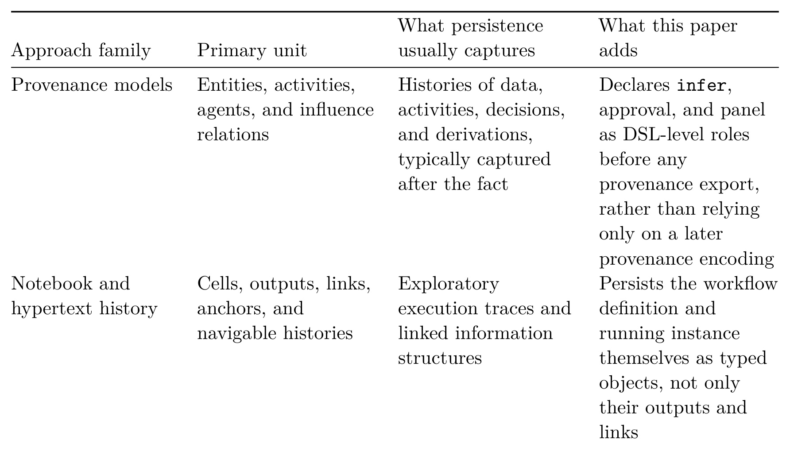
Table 3 上半部分比较 provenance 与 notebook/hypertext。Provenance models 已能表示 entities、activities、agents 与 influence relations，也能在事后捕获 data/activity/decision/derivation 的历史；本文所谓新增，是在 provenance export 之前就把 infer、approval、panel 声明成 DSL-level roles。Notebook/hypertext 保存 cell、output、link、anchor 和 navigable history，本文则要求 workflow definition 与 running instance 本身成为 typed objects。这个比较有启发，但“通常 captured after the fact”并不适用于所有 provenance-aware workflow：有些系统从设计阶段就声明 plan、activity 和 lineage。因此，论文真正需要验证的不是“别人都没有”，而是它的 LLM-specific role、executor mediation 与 context policy 是否比现有 provenance schema 更清楚、更易用。
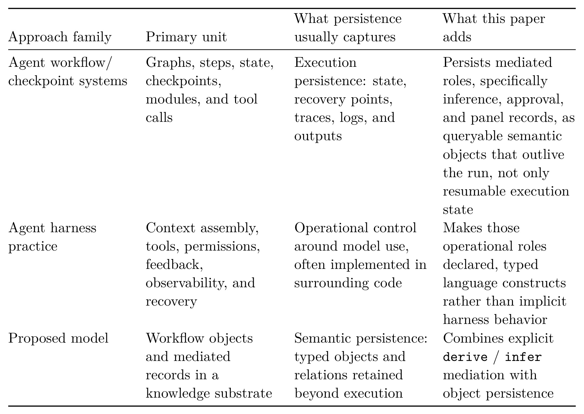
续表把比较拉回当前 Agent 工程。Agent workflow/checkpoint systems 的 primary unit 是 graph、step、state、checkpoint、module 和 tool call，主要实现 execution persistence；agent harness practice 负责 context assembly、tools、permissions、feedback、observability 与 recovery，但这些角色常隐含在 surrounding code。proposed model 的主张是把 inference、approval、panel 等介导角色作为越过 run 生命周期的 queryable semantic objects，并用 derive/infer 明确分界。最合理的解读是互补：现有引擎继续承担可靠执行，语义对象层为长期查询和治理提供结构。若把表读成“checkpoint 系统没有语义记录”就过度外推，因为表未逐个核验 LangGraph、AgentSPEX、科学工作流或商业平台的对象能力。
Appendix C 的 PROV-DM mapping 进一步说明“兼容但不完备”。workflow-definition 可类比 PROV Plan 或 specification entity，workflow-instance 类比 run Activity 加 persisted checkpoint entity，derive 类比生成 derived entity 的 Activity，infer/inference-record 类比使用 context、prompt、model、schema 的 Activity/Entity 对。context-snapshot 可映射 Entity、Collection 或 Bundle，dependency-link 可映射 used、wasDerivedFrom、wasInformedBy、wasInfluencedBy。论文新增的是 DSL role、executor validation/capability policy、panel structure 和 active state 与 durable record 的区分。
证据缺口同样明确：这不是正式 serialization，没有给出 namespace、identifier、bundle、time、agent attribution 或导入导出算法；capability/action、handoff/promotion、supersession lifecycle 被刻意排除。因此，mapping 只能证明概念上有相邻落点，不能证明没有 information loss、能往返转换，或能通过现有 provenance 查询。一个直接后续实验应把同一运行分别导出为 proposed objects 与 PROV-DM，设计依赖回溯、分支影响和审批责任查询，再比较答案完备性与建模成本。
3.3 ARS 风格 claim-review：概念实例而非实现
附录 B 的价值在于把抽象词汇放进一条窄工作流。它借鉴公开 academic-agent skill 中的 reviewer、integrity gate、claim verification、material passport、response trace 和 publication artifact，但作者明确说不是 ARS 复现、实现或评估。对象图先检查“同一 instance 周围是否能区分 active state 与 durable mediated records”。
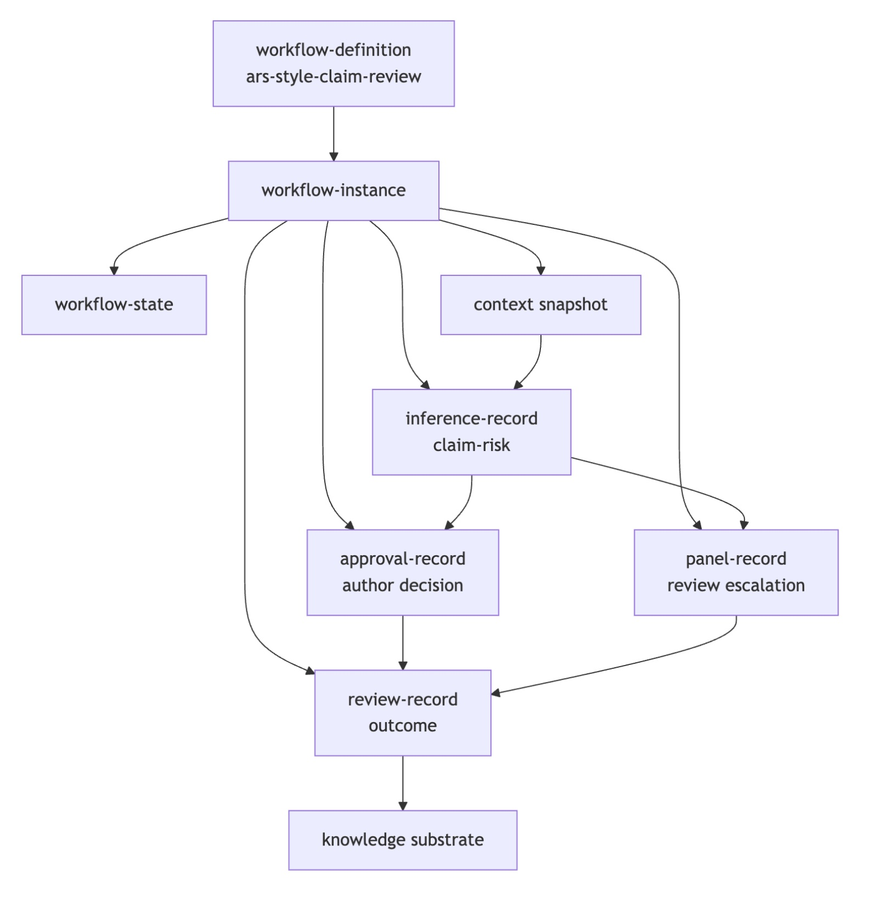
Figure B1 从 workflow-definition ars-style-claim-review 创建 workflow-instance。instance 左侧连接 workflow-state，右侧连接 context snapshot；inference-record claim-risk 同时依赖 instance 和 context，approval-record 表示 author decision，panel-record 表示 review escalation，最后 review-record outcome 进入 knowledge substrate。图最有用的地方，是让同一条业务链上的 authority 不再隐含：模型提供 risk classification，人决定接受、修改、延后或升级，panel 保存结构化意见，executor 才把结果变成最终 record。图也暴露一个未解问题：箭头只表达“有关系”，还没有 relation type、time、version、cardinality 和 failure semantics；真实审计需要知道是 used、influenced、approved 还是 superseded。
伪 Lisp 定义随后把 resource、context、guard、derive、infer、approval、panel、record 和 branch 都写出来。source material 缺失时生成 unresolved-claim；材料可用才允许 infer 进行 support/risk classification；author decision 可以进入 accept/revise/defer，或升级 panel。panel 的 choice 仍不是直接 transition authority，而是生成 panel-record，executor 再依据声明分支写出 accepted-after-panel、revision-needed-after-panel 或 source-work-needed。这一安排与论文的权力模型一致，也说明 panel 与 approval 为什么不能用同一种“human step”概括。
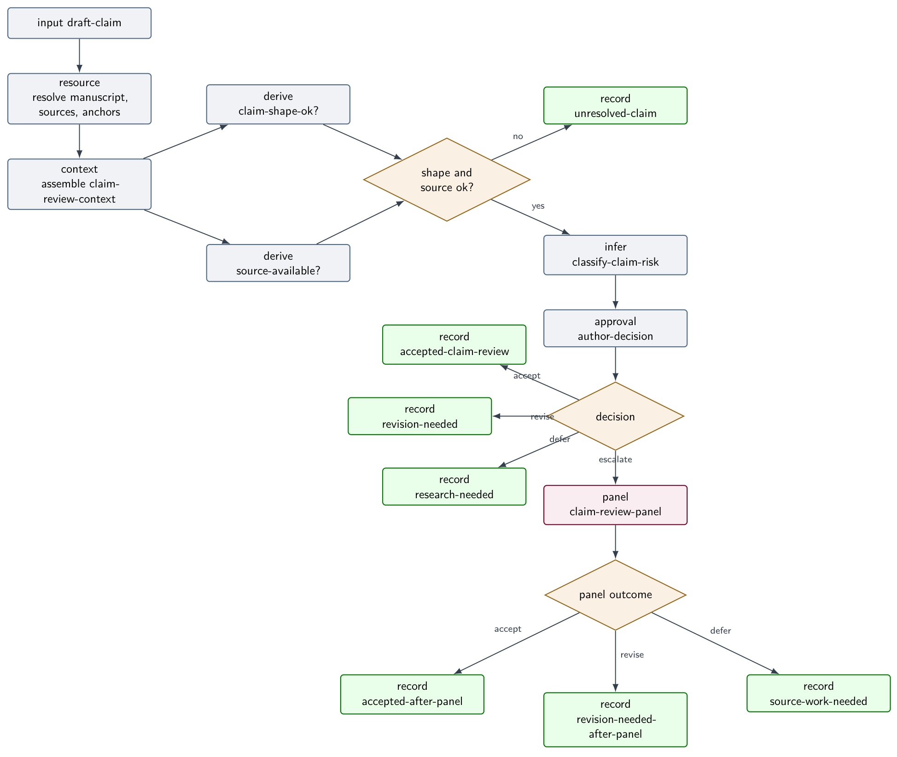
Figure B2 按执行顺序展开同一实例。左上角 input 经过 resource resolution 和 context assembly，两个 derive 分别检查 claim shape 与 source availability；任一前置条件不满足，shape/source 判定的 no 分支直接记录 unresolved-claim。yes 分支进入 infer classify-claim-risk，随后由 approval author-decision 分流。accept、revise、defer 各自产生不同 record，escalate 才进入 panel；panel outcome 再次分成 accept、revise、defer 三条记录。图中模型判断和人工判断都没有直接指向外部副作用，符合 executor mediation。作为概念一致性检查，这条链覆盖了论文的大部分原语；作为系统证据，它还缺少真正的 parser、validator、runtime adapter、持久化查询和恢复测试。
这个 worked example 还没有压力测试复杂情形：多个 claim 并发修改同一 source、panel 成员意见互相矛盾、context snapshot 过大、引用后来撤回、模型版本改变、approval 被撤销、一次 record 写入成功而 state 更新失败。Optional batch form 只用 bounded loop 调用子 workflow，parent-child instance 的 record linkage 仍放在 future handoff/promotion track。因此，它目前证明的是“词汇能描述一个例子”，不是“词汇对真实工作流充分或完备”。
3.4 四项设计主张应怎样被验证
第一项主张是 workflow definitions 应成为 data objects，而非只有 procedure/configuration。可验证任务应让受试者查询“哪些定义会访问某资源、包含某 infer site、受某 guard 约束”，并与普通配置加索引的基线比较建模时间、查询正确率和变更成本。当前论文没有证明 typed object graph 比现有 DSL AST、workflow registry 或 provenance Plan 更优。
第二项主张是 workflow instances 应作为 live resumable objects 持久化。最小 prototype 可以实现一个 definition、一个可中断 instance、typed inference/approval/panel records 和 context snapshots，与 checkpoint+trace baseline 比较恢复成功率、错误复用率、记录体积、索引延迟和迁移成本。还应故意改变 context、model version、policy 与 source freshness，检验 compatibility rule 是否能拒绝不安全复用。
第三项主张是 derive 与 infer 应接受不同语义标准。评估前需先标注一组真实 workflow steps，看多位设计者对 derive/infer 的一致性；再注入“模型输出影响分支”“随机算法无 seed”“工具返回不稳定”“LLM 生成 DSL”案例，统计隐藏 judgment dependency、policy bypass 和不可重放结果是否减少。若不同作者频繁给同一步骤不同分类，模型就需要更精细的 nondeterministic primitive 或 annotation。
第四项主张是人工 reasoning interaction 应成为 typed records。可以设计回溯任务，让审查者回答某决策的可见 context、模型建议、批准者、panel arguments、后续 supersession 和受影响对象，比较 typed record 与 chat/log baseline 的准确率、时间和主观负担。同时必须测 privacy、retention 与 contestability：记录越细，敏感数据和错误判断被长期放大的风险越高。论文已指出这些治理问题，但尚无 threat model 或删除后 provenance 规则。
总体而言，作者给出的材料足以支撑“这是一个内部一致、与相邻传统可对话、值得实现的小型概念模型”，不足以支撑“它已经改善 audit、trust、attribution、reproducibility 或 performance”。这不是对论文的苛责，而是作者自己设定的边界。把证据级别保留下来，反而能更清楚地看出下一步研究应从哪里开始。
4. 总结
4.1 我的判断
这篇论文最有价值的贡献，是把 LLM 工作流中的四类东西分开：确定性计算、模型介导判断、人工授权/讨论、executor-applied control flow。derive 与 infer 让 judgment dependency 不再藏在普通函数名里，approval 与 panel 让“人参与”不再是含混单点，workflow-definition 与 workflow-instance 的对象化则让定义、运行和记录可以在同一知识基底中被查询。它不是新 Agent framework，也不与 checkpoint、trace 或 provenance 竞争；更合适的定位是这些系统之上的 semantic object contract。
对推荐系统和大模型工程，最值得迁移的是“记录关系而不只记录结果”。离线训练中，模型评审、数据例外、特征审批和上线决定可以分别成为 typed records；在线或 Agent 化链路中，内容理解标签、检索候选、LLM rerank 判断、人工审核和外部 action 可以保留显式 dependency。这样做的意义不是让所有中间产物永久保存，而是让真正影响后续决策的材料具有清楚的身份、上下文和生命周期。
4.2 局限与风险
第一，没有实现与实证评估，所以 inspectable、resumable、reviewable 都是设计目标，尚未证明比 checkpoint+trace 或现有 provenance 方案更好。第二，formal transition semantics 缺失；并发、失败原子性、幂等、版本迁移、跨 instance 关系和 distributed event 都未定义。第三，derive/infer 边界存在灰区，随机算法、外部测量、缓存检索、模型辅助 DSL 生成可能需要额外 primitive 或更细 annotation。
第四，record lifecycle 未决。长期保留 inference、context、approval 和 panel 会增加存储、索引、权限、隐私与纠错成本；压缩、删除、tombstone 或 supersession 后保留什么 provenance 仍不清楚。第五，77 项扫描的选择偏差、定性评分和内部材料限制了外推，approval 也没有原始计数。第六，PROV-DM mapping 只是初步类比，尚未展示无损导出、查询互操作或与现有 workflow engine 的集成。
4.3 后续跟进
第一步应做最小 prototype：一条 definition、一个可恢复 instance、一次 derive、一次 infer、一次 approval、一次 panel 和 context snapshot，先把 identity、version、dependency 与 failure semantics 固定下来。第二步应建立 checkpoint+trace 与 provenance-aware baseline，用恢复、依赖回溯、上下文复审、错误复用和记录成本做可重复比较。第三步应把同一对象图正式导出到 PROV-DM，验证哪些 DSL-level role 能保留、哪些必须扩展。
第四步应扩展 vocabulary scan 到公开 runbook、issue workflow、研究协议、推荐系统训练/发布流水线和多 Agent 协作，并报告抽样策略与标注一致性。第五步应优先设计 lifecycle 和 threat model：context snapshot 的访问控制、敏感信息删除、旧 inference 的争议/替代、approval 撤销和 provenance 保留都比继续增加 primitive 更紧迫。只有这些工作完成后，semantic persistence 才能从有吸引力的概念词汇走向可验证、可治理的工程基础。